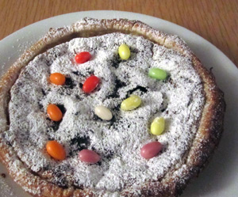

Fränzis Osterfladen
6 von 61 liter milch, 100 gr zucker, 100 gr paidol (in einem grossen coop erhältlich), 2 eigelb, 100 gr rosinen, 100 geriebene mandeln und geriebene zitronenschale aufkochen. zur vor dem sieden beiseite stellen und abkühlen lassen. 2 eiweiss schlagen und unter die masse ziehen. auf blätterteig geben und bei 200 grad 30 min backen. puderzucker darüber
